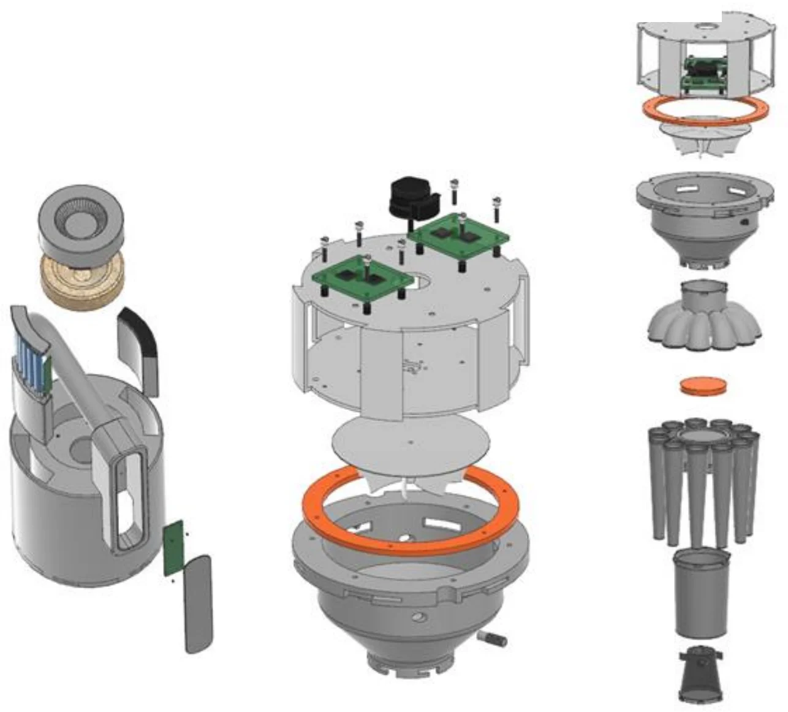
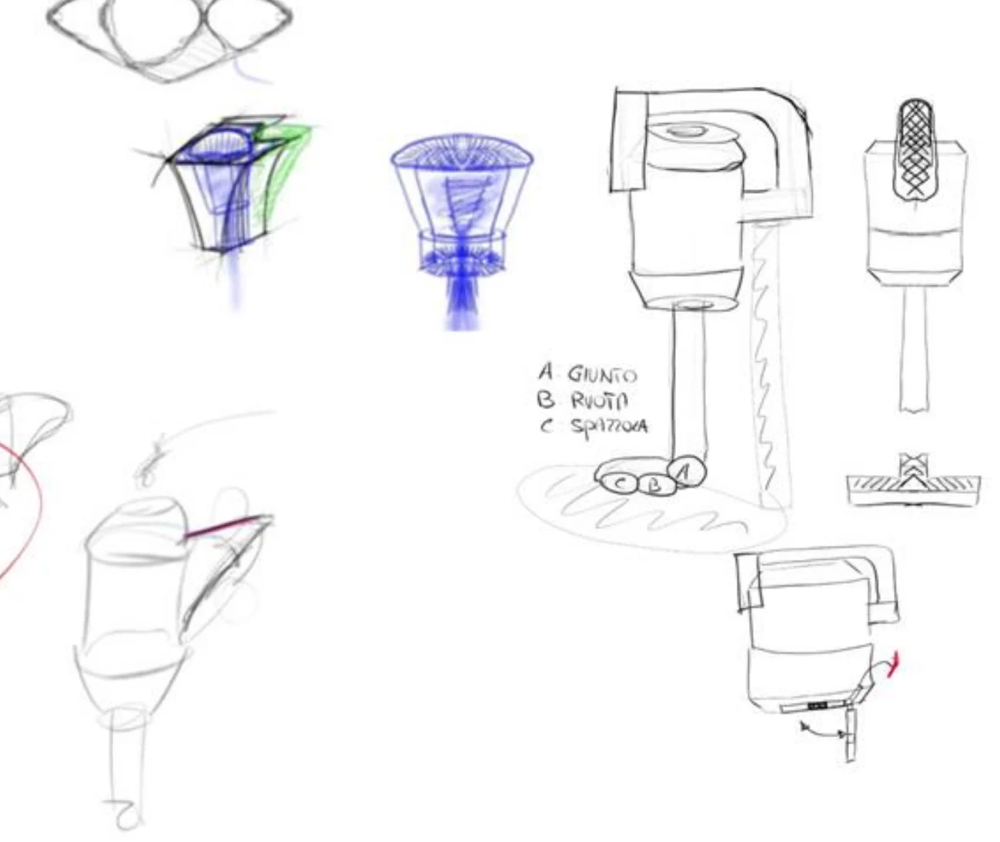
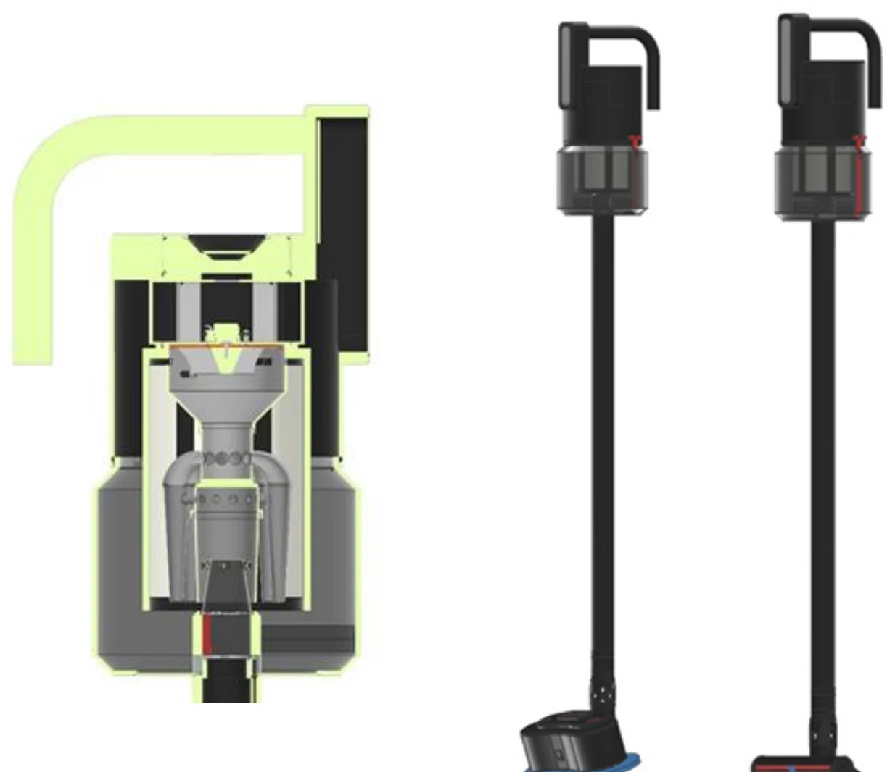
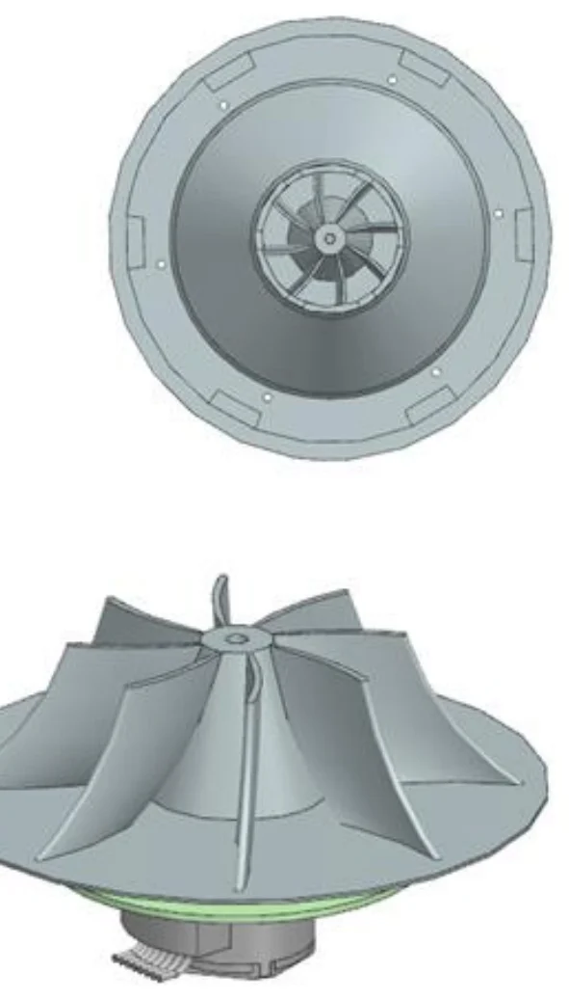
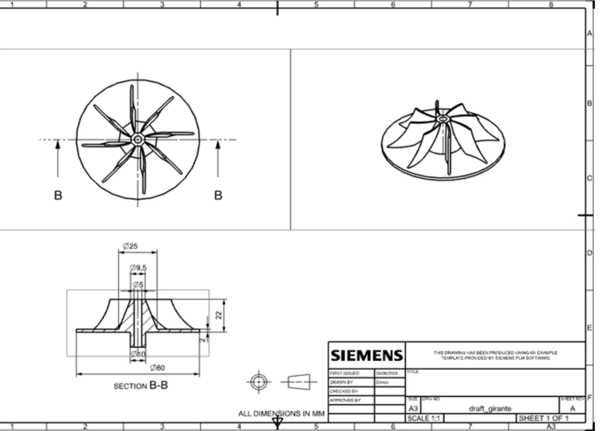
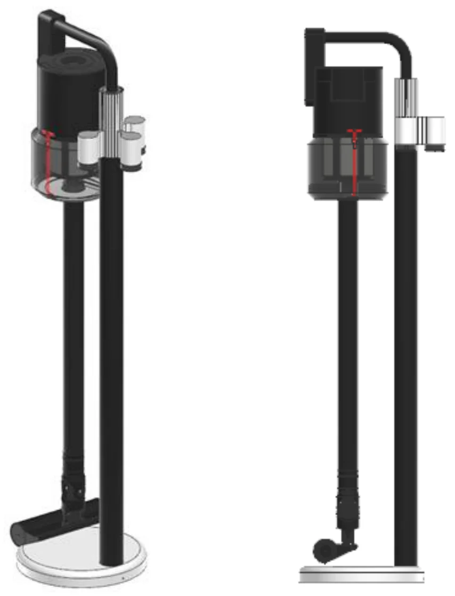
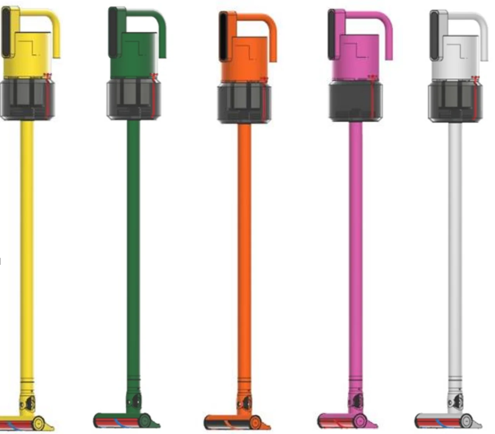
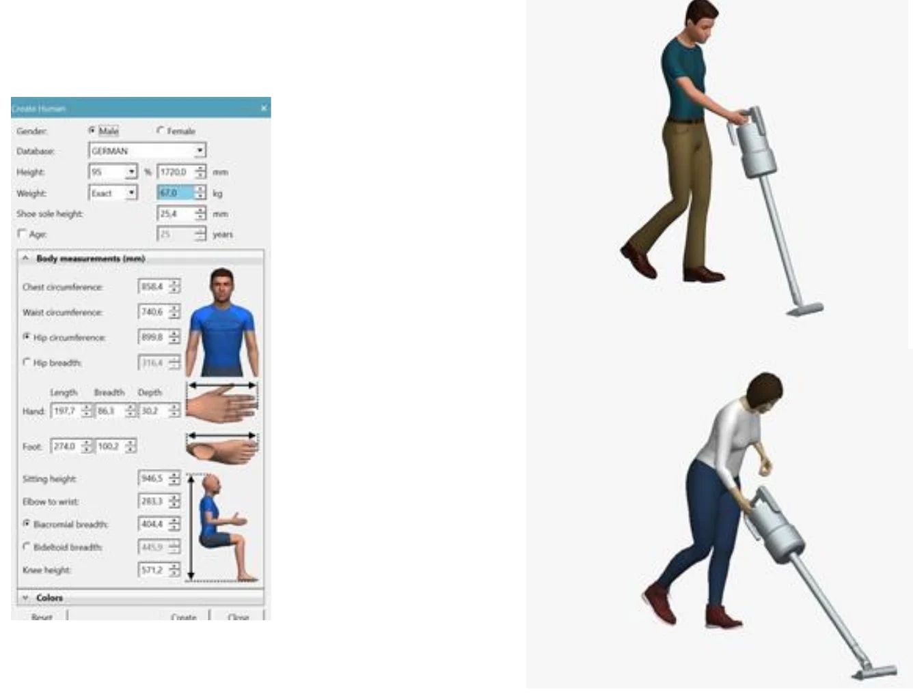

Product design
vacUUUm: cordless vacuum, concept to drawings
A complete product-development cycle in Siemens NX: from user needs and requirements to subsystem design, exploded assemblies, production drawings and an ergonomic check in Tecnomatix.
- technical requirements
- 11
- functional subsystems
- 7
- target weight
- 2.4–3 kg

- Turned user research into 11 measurable technical requirements, then into a modular architecture of seven subsystems.
- Modeled every subsystem in Siemens NX — motor and impeller, cyclonic + HEPA filtration, 1 L bin, removable battery, charging base — with exploded views and drawings.
- Checked the posture of right- and left-handed users in Tecnomatix before freezing the design.
- Siemens NX
- Tecnomatix (ergonomics)
- QFD / requirements
- Functional decomposition
- Technical drawings
- DFM
01
The process
The course follows a full product-development cycle on one product. Use the arrows to go through it.
PROCESS
- 11
STEP 01
From user needs to requirements
Market and user-review analysis gave 13 user needs, translated into 11 technical requirements: 2.4–3 kg, 60 min autonomy, about 200 air watts of suction, under 80 dB, a 1 L bin, cyclonic separation with a HEPA filter, recharge under 240 min and maximum footprints for the vacuum and its base.

STEP 02
Functions and concepts
A black-box and modular breakdown split the product into subsystems; each one got several sketched concepts before choosing.

STEP 03
From concept to 3D
The chosen layout became a first 3D model in Siemens NX, then the full product.

STEP 04
Subsystem design
Each subsystem is traced back to the requirements it serves. The propulsion unit (ABS housing, steel impeller, 310 g) drives suction power and noise; the battery pack (340 g) is removable.
STEP 05
Exploded assemblies
Exploded views of the main subsystems check assembly order and part count, from the motor stack to the cyclone and bin.

STEP 06
Production drawings
Dimensioned drawings for every major component, generated in NX.

STEP 07
Charging base
A vertical charging base stores the vacuum and accessories in a small footprint.

STEP 08
Final design
The final assembly, with interchangeable colored shells as an attractiveness requirement.

STEP 09
Ergonomic check
Digital human models in Tecnomatix scored the posture of right-handed and left-handed users, and of a bent posture, with RULA tables.